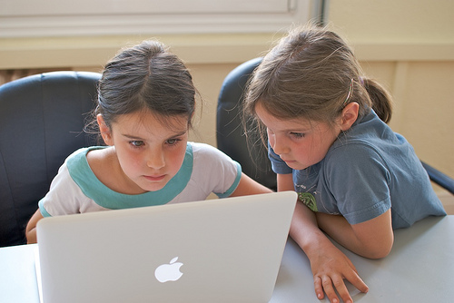
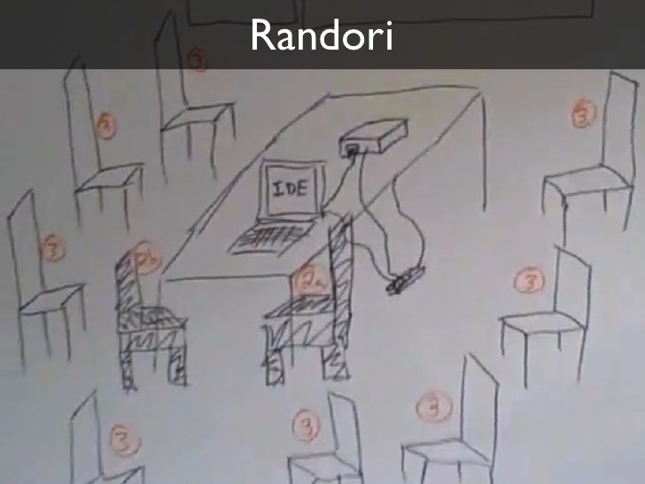

最近很紅的幾個名詞，而且看活動蠻好玩的，了解的過程順便整理一下筆記
Coding Dojo
這是指一個學習的過程或方法，招集一群人有目地的在安全的環境一起學習技術或探索問題，而這過程著重在如何一起學習與解決問題，也會從中加入一些其他的開發方式，例如Pair coding、TDD、Design pattern等來當作主軸，讓大家在過程中都有個主題的方向去學習，既使犯錯了也是很好的教材。
以下稍微解說一下方式與角色：

Driver：主要負責寫Code的人，完成即可重回Spectators去準備下一輪挑選
Navigator：負責協除寫Code的人完成並擔任下一個Driver
Spectators：輪流上去成為Navigator的代選者
以上的腳色透過一次固定的時間(約10-15分鐘)的方式輪替角色並從中獲得練習
通常會搭配幾個Rule:
- Pair Programming
學習如何兩個人共同合作寫Code(此時Driver一組有兩個人)

- TDD
依照TDD的方式些撰寫測試案例再來完成功能進而改善code的品質

- Step by Step
以能滿足Test的方式一步步完成

- Call Help
如果真的遇到問題絕對不要害怕向Navigator提出求救

Code Kata
這名詞也指的是招式(套路)，通常在學武功的時候都會有幾招固定招式，如下

相同的概念放到Software development裡面其實就是給一些已知的問題讓你練習，如
這樣的既有問題該如何去寫出程式來解決問題。而在實際的開發世界裡面大多數剛踏進這個產業的人往往缺乏相關經驗甚至沒有開發經驗，而Kata就是一個讓他們培養解決問題的經驗最好的練習方式。
而流程上他分為三個部分，類似紅綠燈的：紅、黃、綠
紅:測試失敗
黃:可以改善功能已達到需求
綠:測試成功
由撰寫第一個測試失敗的Test Case 開始改進，然後實作通過測試(綠燈)後遇到需求變更或Refactoring評估如何改善(黃燈)，然後再繼續實作直到又通過綠燈換下一個
Wasa

一個寫測試，另外一個人寫程式通過測試，但經過一段時間後兩者調換身分，以此練習TDD與pair programming的開發方式與默契.
Randori

Coder：就是1，負責寫Code的人
Copilot：大部分是3，代表其他人，但下一個準備上台的人視為Coder Pair Programming的Partner，也就是2
把題目跟開發者寫的東西投影出來，然後當Coder在台上寫的時候Copilot則在下面討論，然後依序提出與改進，然後依樣輪流上來改寫，改寫時要通過前面那個人所寫的Test Case 確保寫出來的Code符合預期，所以這是TDD與Kata 很好的一個練習實作方式(實際上也常使用Pair Programming的方式上台寫作)。
流程上類似：第一個看到需求後先寫下了Test Case然後讓第二個補上功能，再讓第二個寫Test Case，第三個上來寫功能這樣的循環